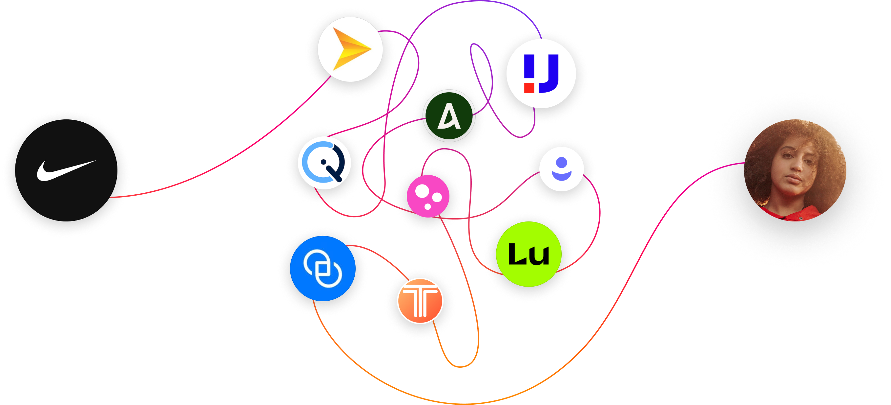
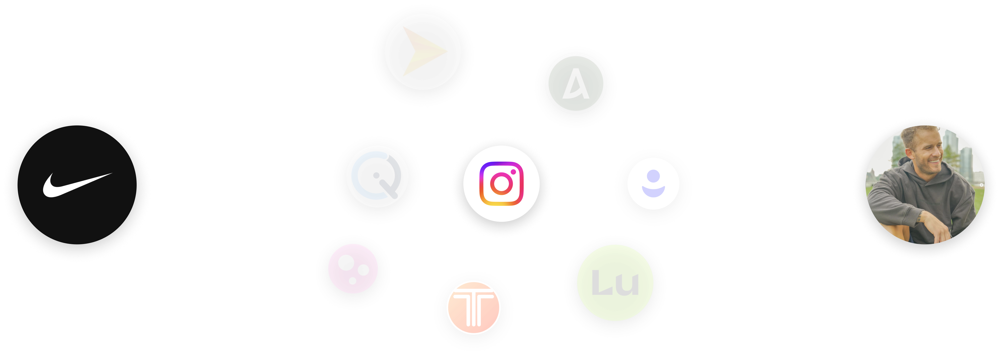
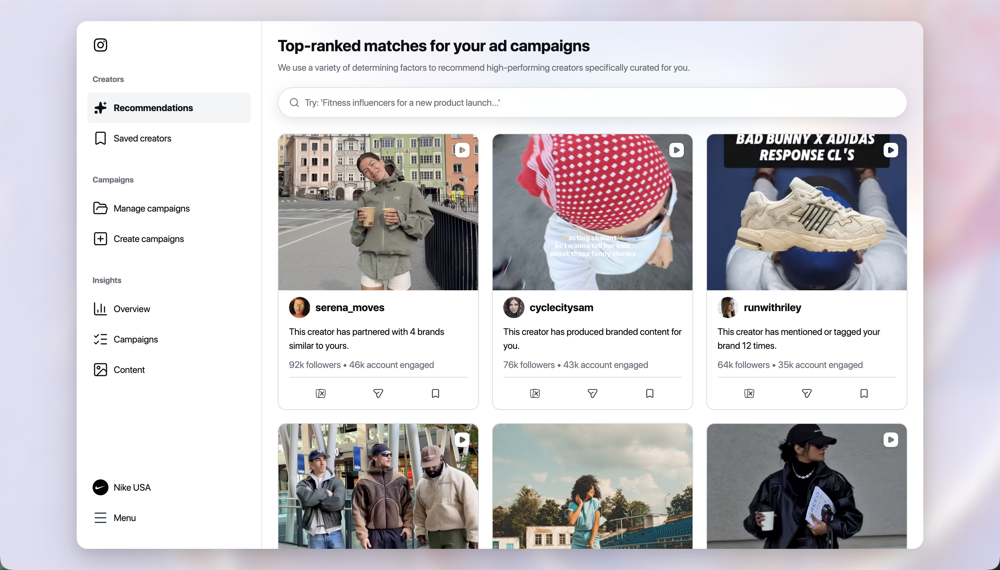

AI-Powered Creator Recommendations
Brands were struggling to find the right creators for partnership ads — one of Instagram's most powerful ad formats. I conceived the idea of leveraging ML to develop a feature that matches creators to brands at scale, driving the end-to-end execution of the MVP.
Key Results
“Look and feel” metrics for finding creators
Instagram's Creator Marketplace connects brands with creators for partnerships. Major advertisers like Nike rely on niche creators to drive traction through content that is both authentic and ad performant. But the marketplace was operating as a passive directory — 77% of searches resulted in no match, creator agencies typically spent 1.5 months sourcing creators, and brands had to do all the heavy lifting to find the right fit.
Content Buried in the Layout
For brands, content quality matters more than who's posting it — it's the strongest signal of whether a partnership ad will convert. But the creator card was built around creator stats like follower count, location, and category, with no way to preview the content itself, leaving brands unable to evaluate what actually drives results.

Manual Creator Sourcing
Sourcing and evaluating creators was highly manual — often outsourced entirely to third-party agencies — making it the biggest pain point in running partnership ads efficiently.

Lack of visibility on brand partnerships
A creator's track record partnering with brands or posting branded content is a strong signal of how likely their content is to perform as a partnership ad. But the discovery experience didn't surface this history at all, making it hard for brands to gauge the probability that a creator's content would convert into a successful partnership ad.

From passive directory to intelligent matchmaker
I identified a critical opportunity: leverage Meta's ML capabilities to intelligently surface creators whose content would drive the highest ad conversions — directly fueling Creator Marketplace's strategic pivot toward partnership ads, Instagram's fastest-growing ad format.

Hypothesis: leveraging Meta's rich data to power ad-optimized, ML-driven recommendations would increase usage of Partnership Ads.
Prioritizing mid-funnel
From 50+ ideas, impact sizing surfaced four high-potential concepts. In partnership with leadership, we focused on content and creator sourcing—the highest-leverage point in the mid-funnel to improve match quality and drive downstream conversion.

Smart Recommendations
Surface ML-ranked creators by predicted ad performance, not just follower count.

AI Search
Describe the campaign. Get matched creators instantly.

Ad Performance Prediction
Forecast ad conversion before a brand commits to a creator.

Seamless ad conversion
Turn a strong creator match into a frictionless path to ad conversion.
Building the ML model
To bring the concept to life, I worked closely with ML and Data Science to define the six signals most predictive of ad conversion, converting broad ideation into data-driven inputs that enabled high-quality creator and content sourcing at scale.
| # | Feature | Coverage | Content quality | Example |
|---|---|---|---|---|
| 1 | # of creatives that are PA/BC | Medium | High |  |
| 2 | # of times a creator has mentioned the brand | High | Low |  |
| 3 | # of times a creator has tagged the brand | High | Low |  |
| 4 | # of times a creator has tagged the product of the brand | Medium | Low/Medium |  |
| 5 | # of affiliate content a creator has for the brand | Low | High |  |
| 6 | User engagement on creator's content for the brand | Low | High |  |
| 7 | Average CTR of creatives used in PA | – | – | – |
| 8 | Worked with similar brands | – | – | – |
| 9 | Creator bio text | – | – | – |
| 10 | Text caption of last X reels/posts/feeds | – | – | – |
| 11 | Follower vec | – | – | – |
Creator Card Explorations


Laying the Foundation for an ML-Driven Creator Marketplace Centered on Partnership Ads
The feature launched in February 2024 and immediately drove measurable results — improving match quality, increasing engagement, and unlocking new advertiser partnerships across global markets.

+30% Brand-Creator Matches
ML-powered recommendations directly improved match quality and drove ad conversions, unlocking new revenue channels for Creator Marketplace.
+25% Engagement Rates
Higher-quality creator-brand pairings led to stronger content performance, expanding adoption beyond the U.S. into global markets.
Major Advertisers Onboarded
Onboarded top global advertisers to Creator Marketplace with +20% user satisfaction, validating the platform as a scalable channel for partnership ads.
“In Alpha testing with 10 brands, the new recommendations surface was rated extremely intuitive with zero functionality issues. 100% of partners said the ability to narrow down and inform creator recommendations would increase the value they experience with the product.”
Alpha Test Results
What I Learned
Recommendations Alone Aren't Enough
After launch, brands wanted more control — not just passive recommendations. This led to a follow-up design merging search and recommendations into one experience, letting brands refine ML suggestions on their own terms.
Ad Performance ≠ Content Quality
A creator can meet every partnership ads criterion and still produce content that doesn't resonate. The real challenge was balancing ad conversions with authentic, high-quality content — too complex for MVP but essential for long-term trust.
Understanding the Workflows Shaped the Strategy
Mapping out how brands and agencies actually sourced and vetted creators — the back-and-forth, the manual handoffs, the disconnected tools — revealed exactly where the matchmaking process broke down. That understanding directly shaped the strategy for streamlining it with ML.